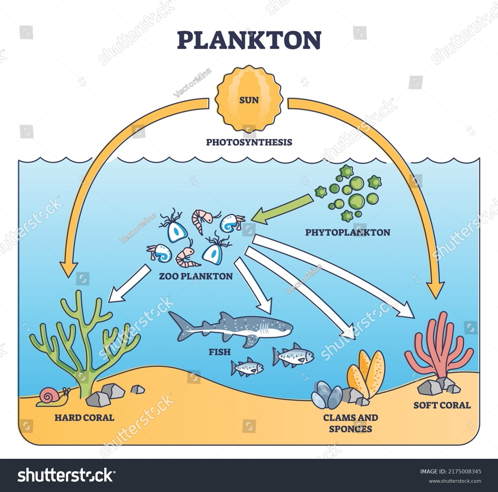
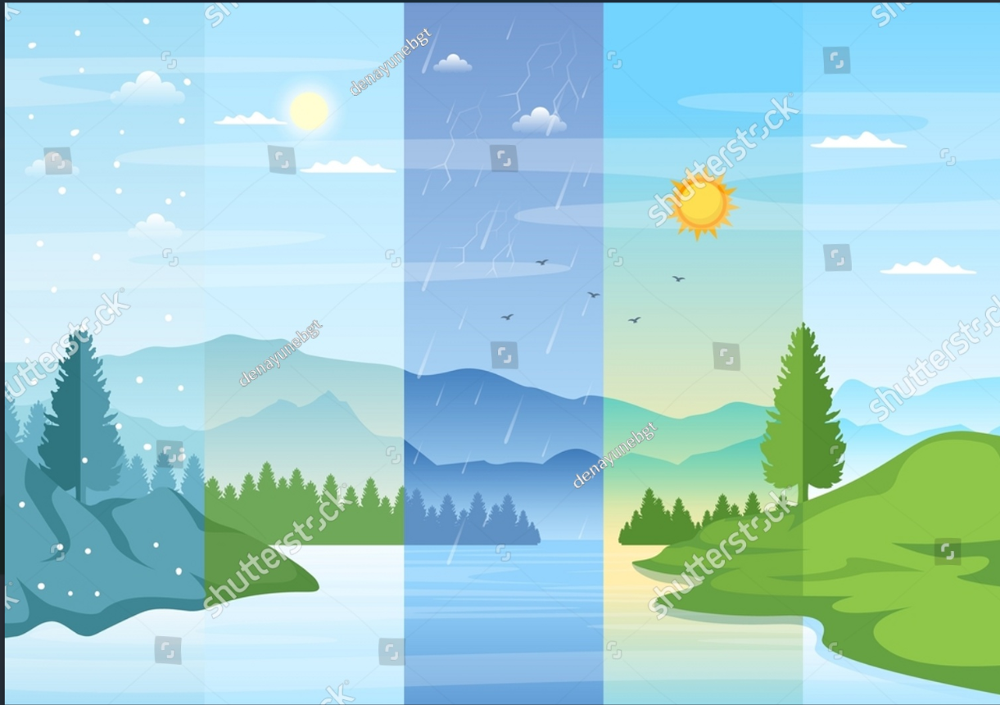
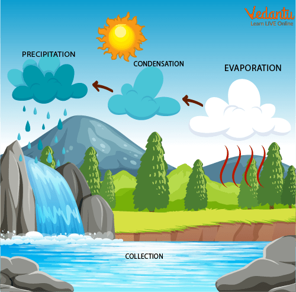

Definition: An ocean is a huge body of salt water that covers most of the Earth's surface. It's so big that we can see it from space!
Fun Fact: Oceans cover about 70% of the Earth's surface. That's a lot of water!
Names of Oceans: There are five big oceans in the world: the Pacific Ocean, Atlantic Ocean, Indian Ocean, Southern Ocean, and Arctic Ocean
1.12 Why Are Oceans Important?
Home to Many Animals: Oceans are home to lots of different animals like fish, whales, dolphins, crabs, and turtles. Some animals, like sharks and octopuses, live deep under the water where it's very dark.
Oxygen from Oceans: Did you know that oceans help us breathe? Tiny plants called plankton in the ocean make a lot of the oxygen we need to live!
Weather: Oceans help keep the Earth warm and help make weather like rain, storms, and clouds.
1.13 What Lives in the Ocean?

Plankton: These are tiny plants and animals that live in the ocean. They are so small you need a microscope to see them! They are very important because they are the first step in the ocean food chain.
Fish and Whales: Oceans are full of fish of all sizes, and whales, which are the biggest animals in the world. Some fish, like clownfish and seahorses, live in coral reefs.
Coral Reefs: A coral reef is like an underwater city where lots of fish, plants, and other creatures live. Corals are alive, even though they look like rocks!
1.14 What is the Ocean Made Of?
Salt Water: The ocean is salty! If you ever taste ocean water, it tastes salty like when you put salt on your food. This salt comes from rocks on land that get washed into the ocean by rivers.
1.15 How Deep is the Ocean?
Different Layers: The ocean has different layers. Near the top, it's bright and warm, but as you go deeper, it gets colder and darker. At the very bottom, it's so dark that no sunlight can reach, and it's very cold.
The Deep Sea: The very deepest parts of the ocean are called the deep sea. Even though it's super dark, some animals like giant squids and glowing jellyfish live down there!
Fun Ocean Facts For Kids
The Blue Planet: Earth is called the "Blue Planet" because most of it is covered by oceans.
Waves: The wind blows across the ocean to make waves. Waves can be big or small, depending on the wind.
Tides: Oceans have tides, where the water moves up and down on the beach. This is caused by the Moon's gravity pulling on the water.
Activities:Let's Have Some Fun!
Ocean Animal Drawing: Ask students to draw their favorite ocean animals, like fish, whales, or crabs.
Ocean Zones: Use a clear bottle filled with layers of different colored water (blue at the top, dark blue or black at the bottom) to show the different ocean layers.
1.2 Clouds & Weather
1.21 What Are Clouds?
Definition: Clouds are made of tiny drops of water or ice that float high up in the sky. They come together to form the clouds we see.
How Clouds Are Made: When water on the Earth (from rivers, lakes, oceans, etc.) gets warm, it evaporates (turns into water vapor) and goes up into the sky. As the air gets cooler, the water vapor turns back into tiny droplets, and that makes clouds!
1.22 Different Types of Clouds
Cumulus Clouds: These are the big, puffy clouds that look like cotton balls. You often see them on sunny days.
Stratus Clouds: These clouds form a blanket across the sky and make it look gray. Sometimes they bring light rain or drizzle.
Cirrus Clouds: These are wispy clouds that look like feathers. They are very high up in the sky and are made of ice crystals.
1.23 What is Weather
Definition: Weather is what happens outside every day. It includes things like sunny, rainy, cloudy, or windy days. It can change from day to day or even hour to hour.
Weather and the Sky: Weather depends on what's happening in the sky—whether the Sun is shining, clouds are forming, or it's raining.
1.24 Types of Weather

Sunny: When the Sun is shining bright and there are no clouds in the sky, it's a sunny day. It usually feels warm.
Rainy: On a rainy day, water falls from the clouds to the ground. Rain helps plants grow and fills rivers and lakes.
Windy: When there's a lot of air moving, we call it windy. Wind can make leaves blow, kites fly, and sometimes it feels chilly.
Snowy: When the weather is very cold, snowflakes fall from the clouds instead of rain. Snow is made of ice crystals and makes everything look white.
Stormy: Sometimes, clouds get dark, and you hear thunder or see lightning. That means a storm is happening. Storms can bring heavy rain and strong winds.
1.25 Why Do We Need Weather?
Plants and Animals: Plants need sunshine and rain to grow, and animals need water from the rain to drink.
Seasons: Different types of weather happen during the seasons. In summer, it's hot and sunny; in winter, it can be cold and snowy.
1.26 How Does Rain Happen?

Water from the ocean, lakes, and rivers turns into water vapor and goes up into the sky.
The water vapor cools down and forms tiny drops, which make clouds.
When the tiny water drops in the clouds come together, they get heavy and fall down as rain.
1.27 How Does Snow Happen?
When it's really cold, the tiny water drops in the clouds freeze and turn into ice crystals.
These crystals fall to the ground as snowflakes.
1.28 What Makes Wind?
Wind happens when air moves. Warm air goes up, and cold air comes in to take its place, making the air move. That's what we feel as wind!
Fun Weather Facts for Kids
Rainbow: After it rains, sometimes you see a beautiful rainbow in the sky! Rainbows happen when sunlight passes through raindrops and creates different colors.
Lightning: When you see lightning, it's electricity traveling through the air! After lightning, you usually hear thunder.
Wind: Wind helps move clouds in the sky and makes it feel cooler on hot days.
Activities for Young Students
Cloud Watching:
Go outside with the class and look at the clouds. Ask the students to spot different types of clouds (puffy, gray, wispy) and describe what they see.
Make a Weather Chart:
Have students track the weather each day for a week. They can draw a picture of what the sky looks like (sunny, cloudy, rainy, etc.) and discuss how it changes.
Cloud in a Jar:
Create a simple “cloud in a jar” experiment using hot water, ice, and hairspray to show how clouds form when water vapor cools and condenses.
Dress for the Weather:
Have students draw or cut out pictures of clothes they would wear on a sunny, rainy, windy, or snowy day. Discuss how weather affects the way we dress.